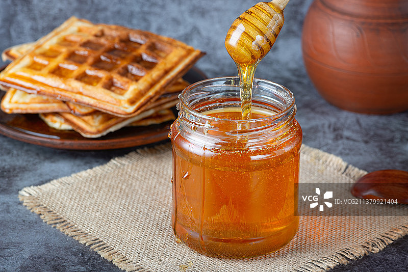
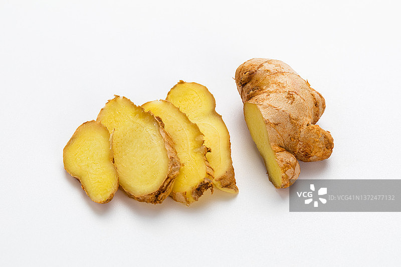
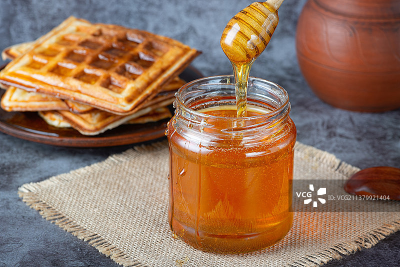
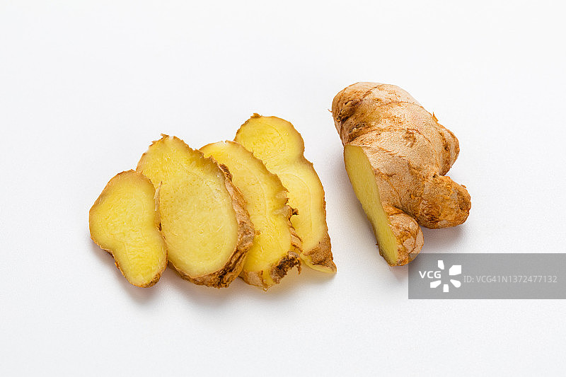
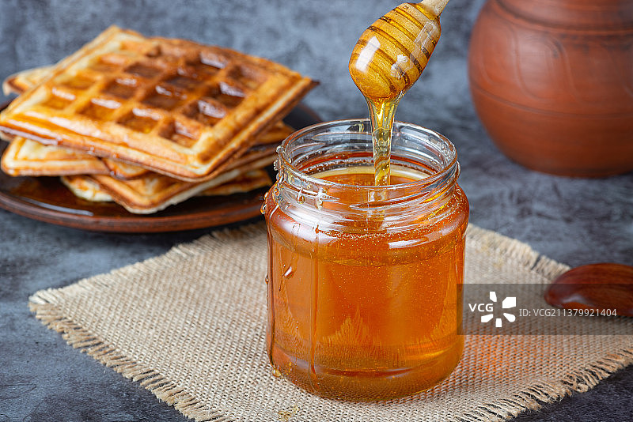
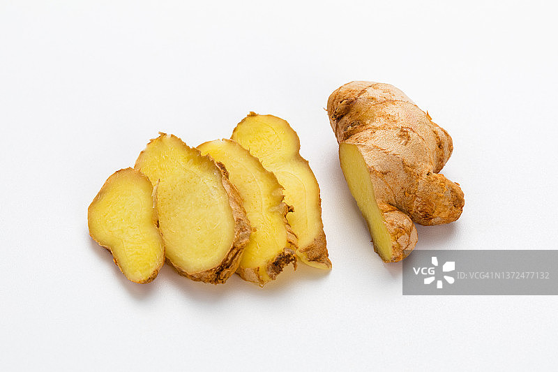

烤乳猪是彝族的传统美食，尤其在楚雄彝族自治州等地具有悠久的历史。
它不仅是彝族人民在重要节日和庆典上的传统美食，也是招待远方贵宾的特色菜肴。
烤乳猪的制作技艺被列为楚雄彝族自治州州级非物质文化遗产代表性项目，体现了这道料理在当地文化中的重要地位。
主料：选择3-4个月大的本地乳猪1头（约10-15斤）。
调料：盐、五香粉、八角末、白糖、豆酱、甜酱、红腐乳、麻酱、花生油、汾酒、蒜泥、蜂蜜、白醋、糯米酒。
辅料：葱段、姜片。


处理乳猪： 将乳猪宰杀后，去除内脏和骨头，洗净备用。 在乳猪身上均匀地戳一些小孔，以便腌制时入味。 腌制： 用五香精盐均匀涂抹猪内腔，腌制30分钟。 将豆酱、腐乳、麻酱、汾酒、蒜泥、白糖等调料混合均匀，涂抹在猪内腔，腌制20分钟。 烫皮与吹风： 用开水均匀淋在猪皮上，让其表皮绷紧。 将猪皮涂上糖醋，倒挂在风房里，用风扇吹一晚，至吹干水分、猪身凉透。 烤制： 将木炭放入烤炉点燃，乳猪上炉用小火烤15分钟，至猪皮呈大红色时离火。 烤制过程中需不断翻动乳猪，确保受热均匀。 猪皮在烤制过程中会出现气泡，需用尖刀刺穿，确保上色均匀。 上色： 烤制过程中多次涂抹由蜂蜜、酱油等调制的上色料，使乳猪皮金黄酥脆。 出炉： 烤制完成后，将乳猪从烤箱中取出，放置片刻让肉质稍微松弛，然后即可切片享用。 制作时的注意事项
选材：选择健康的乳猪，体重约为5-7公斤，肉质鲜嫩，皮薄肉厚。
火候控制：烤制时需严格控制火候，避免乳猪烤焦。
腌制均匀：腌制时需确保调料均匀涂抹，以便入味。
烤制均匀：烤制过程中需不断翻动乳猪，确保受热均匀。
避免起泡：烤制过程中若发现猪皮起泡，需用尖刀刺穿，避免影响外观。